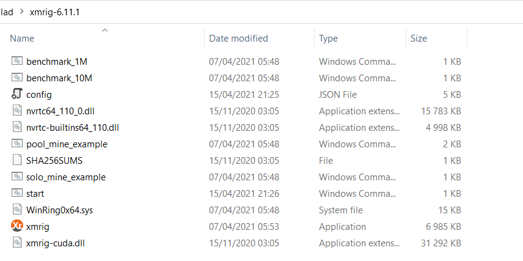

Use Salad in your command line with XMRig GPU
Made by Angaros#1263 - Last update 05/11/2022 @12:11 GMT (DD/MM/YYYY)
Running CLI allows you to:
- Customise GPU usage
- Mine on CPU and GPU at the same time
- Have access to additional miner arguments
- Potentially earn a bit more by using more advanced miner arguments than what Salad uses
There's a video that will explain in detail the process of setting up XMRigGPU. Essentially it's a recap of the written guide, but I also go in detail about the config file.
Join my Discord server for extra help!
The following content is not official, but has been approved. It is not being monitored by Salad. The use of the following is at your own risk, and we will not be held liable for any damage, loss of information, or any issue whatsoever.
We cannot and will not pay you back in any event.
Wondering why this is here? It's because I'm a sole user outside of Salad that made this. Like in a children's' playground, where they say you have to use it at your own risk, it isn't because it is made to hurt kids, but rather because we can't afford to be held liable for damage.
- Internet Connection
- A GPU with 4GB+ of VRAM (although T-REX, Phoenix, NBminer or GMiner are recommended for 6GB+ GPUs)
- 500MB disk space
- Have installed Salad (0.5.6 if you wish to use Nicehash's pool, rather than Prohashing.)
- To have mined once before (This is to generate your Rig and wallet ID, shown in Salad's logs in later steps)
This is going to be a multistep install, due to the requirements GPUs have. First, install the latest XMRig gcc-win64.zip version, found here. This will install the base XMRig miner with the dependencies and required files.
On NVIDIA you'll want to install the GPU modules. NVIDIA requires a special library to be installed, which is located here
In order to mine on GPU with NVIDIA, you'll need to blend both of the installations you made. This is as simple as transferring the NVIDIA module files (the things you installed from the link just above) into the main XMRig download.
You may get a warning about some files already existing. Please overwrite the previous one with the new.
Here's what it should look like (yours *might* differ a bit)
Here is a guide to finding your Salad logs. You'll need these to find the required IDs.
Note that Salad 1.0 no longer gives the required IDs to mine with Nicehash, so you'll have to use Salad 0.5.6 to get the IDs required for these pools.
You may be able to still get your Prohashing IDs in Salad 1.0 by mining at least once with it, heading to your Salad logs folder, opening the folder for one of the miners (e.g. T-Rex), opening the latest log inside said folder, then at the very top you should see something like "-u salad -p (A bunch of random characters)".
It should look something like this:


You'll want to keep these for when we do the linking
- Go in the XMRig folder you installed in Step 1. You'll find a file named start.bat. You'll want to open it with notepad, or a code editor.
Should it not exist, you can also just create it.
- We will need to edit the start.bat file, by adding the correct information:
Nicehash:
xmrig.exe --no-cpu --<gpu_type> --donate-level=1 -o <pool> -u <Wallet Address>.<Rig ID> -a <algorithm> -k --nicehash
pause
Prohashing:
xmrig.exe --no-cpu --<gpu_type> --donate-level=1 -o <pool> -u salad -p <That long string of text> -a <algorithm> -k
pause
- First, the GPU type:
- If you're on NVIDIA, type
--cuda - If you're on AMD, type
--opencl
- Second, the pool and port: You'll want to use one of the following:
stratum+ssl://kawpow.auto.nicehash.com:443- Nicehash KawPow. If you're having issues with the SSL pool, you can alternatively usestratum+tcp://kawpow.auto.nicehash.com:9200stratum+tcp://us.mining.prohashing.com:3361- Prohashing KawPow. Be sure to have,a=kawpowat the end of your 'long string of text'. You can optionally change locations to the one closest to you: us, eu.stratum+ssl://randomxmonero.auto.nicehash.com:443- Nicehash RandomX. If you're having issues with the SSL pool, you can alternatively usestratum+tcp://randomxmonero.auto.nicehash.com:9200stratum+tcp://us.mining.prohashing.com:3359- Prohashing RandomX. Be sure to have,a=randomxat the end of your 'long string of text'. You can optionally change locations to the one closest to you: us, eu.
- Third, the algorithm. If you wish to use KawPow, use -a kawpow. If you wish to use RandomX, use -a randomx
Though currently KawPow is currently more profitable than RandomX, so you'd likely wish to choose that.
- Lastly, the Wallet & Rig IDs: This is pretty straightforward. Add them to the file like shown in the example. You'll need to use the Nicehash values for 'Wallet Address' and 'Rig ID'.
For Prohashing, you'll need to use your 'long string of text' Prohashing ID. If the algorithm indicator at the end of the ID (,a=) doesn't work, try removing it. It should work without it.
- Here's an example of a completed file for an NVIDIA GPU, using Nicehash KawPow:
xmrig.exe --no-cpu --cuda --donate-level=1 -o stratum+ssl://kawpow.auto.nicehash.com:443 -u 373Ee6DSDgAYNAVSnfgUV99248L6Ab7aUH.p36pcuzwyhvd2fx -a kawpow -k --nicehash
pause
- And here's an example of a completed file for an AMD GPU, using Prohashing RandomX:
xmrig.exe --no-cpu --opencl --donate-level=1 -o stratum+tcp://us.mining.prohashing.com:3359 -u salad -p o=b256ea13-797f-474f-b6c9-c8edd47d9787,n=b256ea13-797f-474f-b6c9-c8edd47d9787,a=randomx -a randomx -k
pause
Here's some pretty useful XMRig commands you can use:
--print-time=n: If you want to print (update) hashrate at a faster rate, 'n' being in seconds--background: Will run XMRig in the background. Note: Will not appear in the System Tray, you'll have to close it via Task Manager--pause-on-battery: For those laptop users out there, this will pause mining when your laptop is running on battery life, and resume when it is plugged in.--log-file=n: Where 'n' is the name of the log file.
There are more miner arguments to be found here for aditional customisation.
- Here's an example of a completed file for an NVIDIA GPU, using Nicehash KawPow with extra commands:
xmrig.exe --no-cpu --cuda --donate-level=1 -o stratum+ssl://kawpow.auto.nicehash.com:443 -u 373Ee6DSDgAYNAVSnfgUV99248L6Ab7aUH.p36pcuzwyhvd2fx -a kawpow -k --nicehash --print-time=5 --background
pause
Save the start.bat file, close it, and run it. It should work if everything was set up properly.
Wait about 15 minutes (can be a bit more, a bit less) and verify that you are getting accepted shares, and then earning on Salad. If not, something went wrong. Verify you followed all steps and retry once the issue is fixed.
And there you have it! This should be a quick guide to CLI crypto on your Salad account!
Note: XP and Graph will both work, and this does respect Salad's ToS, so it is not a violation of your contract with Salad.